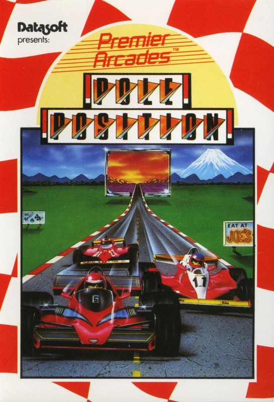
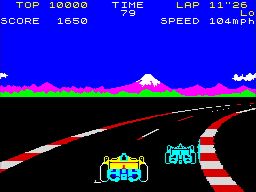

Pole Position


{kind=link}

| Publisher: | Atarisoft |
| Price: | £7.99 |
| Year: | 1984 |
| Source: | CRASH, Issue 12 |
At last, the long-awaited Spectrum version of one of the most famous arcade originals ever Atari's 'Pole Position'. There were rumours earlier in the year that Atarisoft had released the game. It was seen at the Earls Court Computer Fair in September and almost Immediately withdrawn after unfavourable comment from critics present.

The track picture is recognisably that of the arcade original, with the alternating red and white stripes on the road side, striped centre line. moving hills in the background and a long perspective which has the road moving from side to side depending on the car's position on it. Road signs also echo the original and provide a danger to those who go off the road.
You're up against lots of other racers on the road. The game commences from the start grid with a countdown. First you must qualify - 90 seconds in which you must achieve a lap time of better than 73 seconds to get onto the real race. If you hit another car or a hazard you explode and this loses you precious time. No matter how many times you crash you receive another car until the qualifying time has run out. Control includes left and right brake and change of gears between hi and low. Scoring is by lap speed and 50 points per car passed.
CRITICISM
'It seems ironical that the original game that has inspired so many versions on the Spectrum should be the last to appear (at least I expect it's the last - there may be more sophisticated versions to arrive yet)! It also means that Atarisoft have a big job on their hands because a few of the versions have been excellent (Full Throttle for instance). Pole Position has managed to look very like the arcade original, which is good, but it doesn't play anything like as well. Perhaps this isn't surprising, but I thought the control of the car, overall, was a bit rough. The inlay has strategy tips on how to use gears, brakes and the inside lane wherever possible, but this isn't reflected in what you see on the screen. The road, for instance, scrolls past at the same speed, whatever speed your car is doing, which isn't very realistic; and I thought the car handling was a bit sluggish, whereas in the original it was very skittish, and therefore more exciting The graphics are of a high standard, especially your vehicle, and generally Pole Position is enjoy able.'
'At last, its arrived! Since spring I've been waiting to see this game when it was first advertised - nearly eleven months later, I'm actually playing it. Was it worth it, you might say? Well, it's the first racing game I've seen with multi coloured graphics that work and decent sized computer controlled cars to race against. 3D perspective is pretty good, I like the way the colours of the race track alternate from red to white to give an impression of movement. I'd hardly call this game 'Pole Position though, because it is only a race track and doesn't go through the various scenarios as arcade 'Pole Position' does, can't see the point of having a speedometer in this game because no matter how high your speed is, the ground progresses at the same speed that you started at. the only difference being that you slide further on corners. I don't really think it was worth the eleven month wait, as in that time several other racing games have appeared that are equally good, if not better, and besides, it is totally over-priced.'
'The 30 effect in Pole Position is quite pleasing with the multi-coloured mountains in the background creating a sense of space, and the road disappears satisfactorily But the 3D animation of the other cars is a lithe bit jerky signposts seem to hang around rather a long while before finally flashing past. On the other hand they are all very detailed, which makes it difficult to animate fully. Car control is not over-responsive - or perhaps it would be more fair to say that the track doesn't seem to respond as well as your car movement! It also seems a shame that it takes so long to accelerate - surely this vehicle would never qualify on a real track!? More could have been made of the use of gears for speed and control than_ has been. Overall, quite a good race track game, but spoiled by the exceptionally high price tag still, at least it isn't the £l5 we originally feared it would be.'
COMMENTS
| Control keys: | O/P left/right, Q to brake, A to change gear, or use the cursor keys |
| Joystick: | Kempston, AGF, Protek, Sinclair 2 |
| Keyboard play: | Very good, attribute problems kept to a minimum |
| Use of colour: | Good 3D effect, detailed and large |
| Graphics: | Bit dicky, nothing special, nice tune |
| Sound: | Progressive difficulty |
| Skill levels: | N/A |
| Lives: | 1 |
| Special features: | Above average, but pricey |
| General rating: | 80 |
| Use of computer: | 80% |
| Graphics: | 80% |
| Playability: | 71% |
| Getting started: | 75% |
| Addictive qualities: | 52% |
| Value for money: | 49% |
| Overall: | 68% |